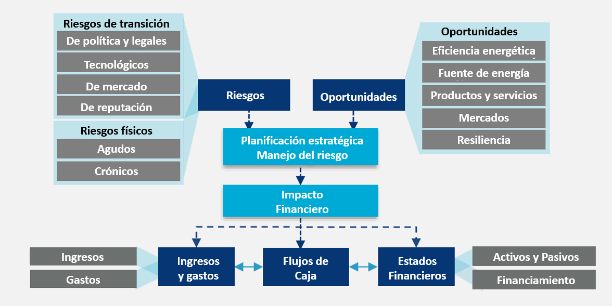
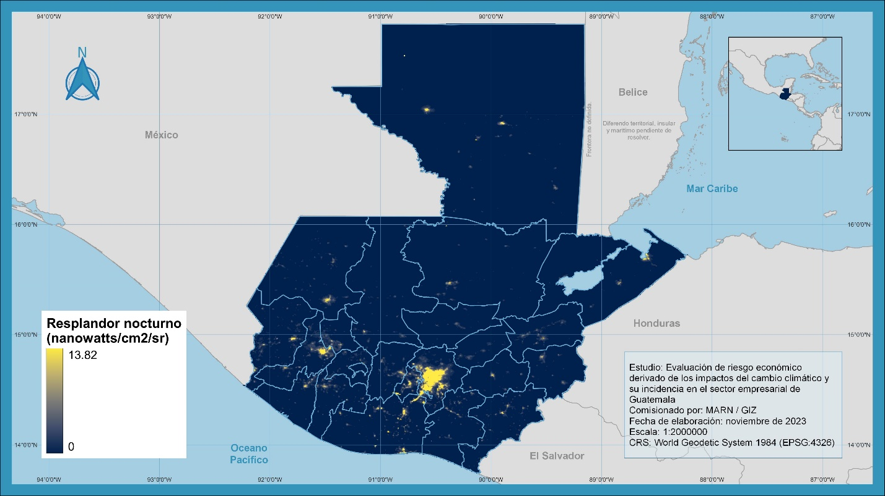
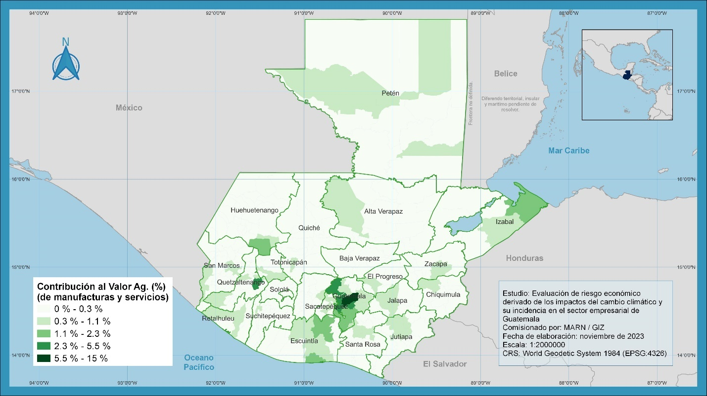
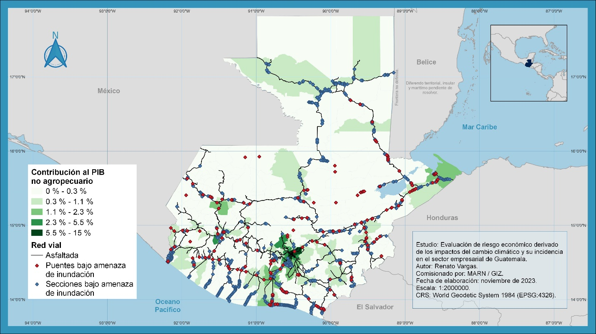
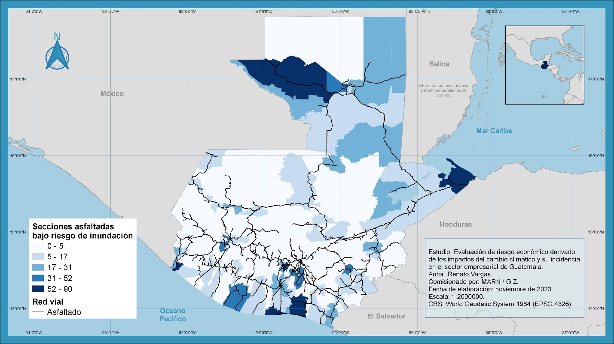
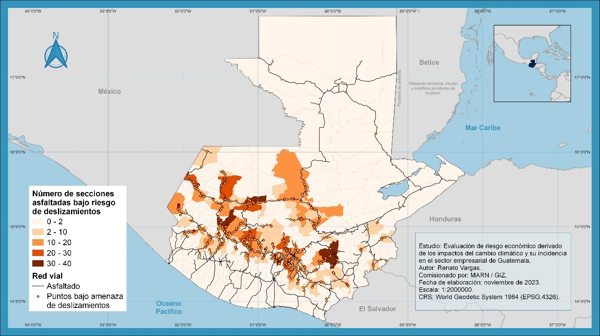
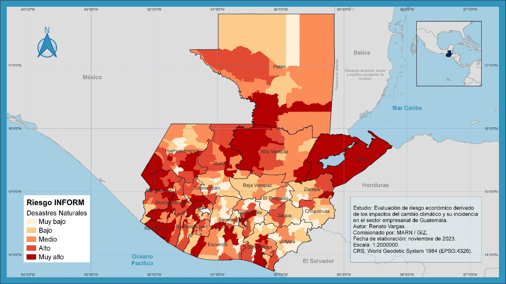
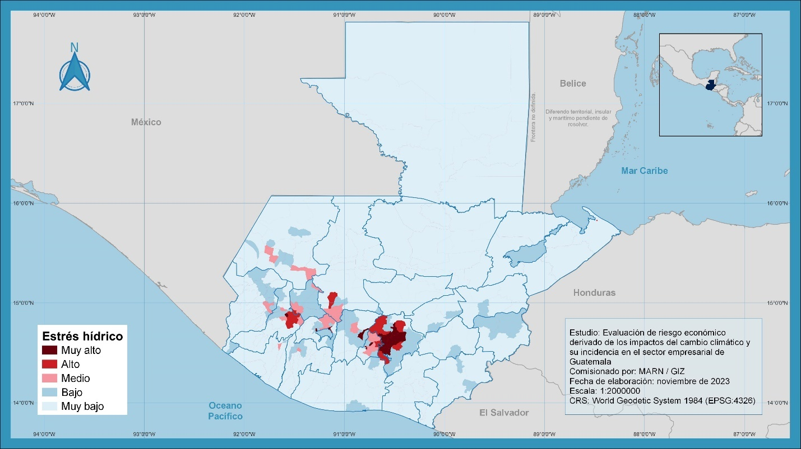

Financial Climate Risk in Guatemala
Introduction
The ADAPTATE Program aims to ensure that state institutions and municipalities, in coordination with private sector groups and companies, as well as educational institutions, coherently meet the goals and objectives for climate change adaptation and rural development, within the framework of legal regulations, procedures, and Guatemala’s international obligations.
This study evaluates the economic risks associated with the impacts of climate change and how they affect the business sector in Guatemala to:
- Determine the current and future impacts of climate change in Guatemala.
- Quantify the economic risk associated with climate change.
- Evaluate the risk to key economic activities affected by climate threats in Guatemala.
This document seeks to present existing information on climate change vulnerability in the country through a multi-criteria approach of diverse analytical perspectives, similar to those used in investment decision-making in capital markets. It is hoped that this will help make a more convincing argument for Guatemalan companies to make climate change adaptation a strategic priority.
Guatemala has significant initiatives that gather climate change information for decision-making on adaptation. For example, as part of the REDD+ Strategy consolidation project, the Ministry of Environment and Natural Resources (MARN) has systematized Guatemala’s official information on climate science, vulnerability, adaptation, and mitigation through the National Climate Change Information System (SNICC) (MARN, 2023). Another relevant example is the Guatemalan Climate Change Science System (SGCCC), integrated by several academic and research institutions in the country, in agreement with MARN, whose objective is to be the “entity responsible for reviewing and generating scientific information and transferring it to political decision-makers regarding the main components of climate change: Climate Science, Adaptation and Vulnerability, and Mitigation and GHG Inventories” (SGCCC, 2023).
Similarly, there is the Municipal Planning in Climate Change (PlaniMuCC) portal, whose objective is to make relevant data for climate change adaptation and vulnerability analysis accessible to governmental institutions at all levels so that they consider the results of the climate change vulnerability analysis in municipal planning and land-use planning (SEGEPLAN, 2023). Also at the municipal level, the Risk Management Index (INFORM) helps identify where there is a greater risk of damage and loss due to various phenomena, not limited to climate change (CONRED, 2023). These systems share a common focus on identifying threat, exposure, sensitivity, and risk to vulnerable populations to enable local governments and government institutions to make planning and policy design decisions.
However, in terms of productive issues, these initiatives focus more on the subsistence agricultural sector and how risks to it can result in a decline in the livelihoods of at-risk populations. The business sector has typically been tasked with mitigating greenhouse gas emissions through energy transformation processes and efficiency improvements, but it is less clear how it can also be affected by climate change in its value generation processes, leading business people to consider climate issues as something beyond their decision-making timeline and, consequently, outside their strategic planning (TCFD, 2017). This study seeks to provide elements to change that perception.
The approach started with an organizational framework for information on climate change vulnerability, linking it to financial impacts on companies. Given the wealth of geo-referenced information on vulnerability, a geographic territorialization of the country’s economic activity was conducted using a novel satellite information technique to determine the proportions of GDP generation at risk. This territorialization was then contrasted with various sources of vulnerability information. Finally, a series of economic activities of interest were selected according to an environmental input-output analysis that ranked these activities according to their direct contribution to four axes (value generation, employment generation, water use, and energy use). Additionally, an in-depth analysis was conducted for eight selected economic activities, focusing on their input structure to determine bottlenecks related to financial risks from climate change and associated costs.
Figure 1. Study Approach Sequence
Source: Own elaboration.
Framework of Financial Implications of Climate Change
Projections of annual average precipitation and temperature for Guatemala conducted by Rivera and colleagues (2020) estimate a temperature increase between 1.5°C in the most optimistic scenario to between 4 and 5°C in the least optimistic scenario by the end of the century, with higher values projected for the northern transverse strip and the Western Highlands of Guatemala. Most scenarios estimate a 25% decrease in annual precipitation by the end of the century, especially in Guatemala’s semi-arid zone and central plateau. Although longer droughts are expected, the rainy season may be disrupted, causing severe local storms (Rivera et al., 2020).
The objectives set at the beginning of this document place particular emphasis on conveying to companies the need to make climate change adaptation a strategic priority. By nature and priorities, the business sector responds to different signals and incentives than government institutions at various levels, and the way climate change information is traditionally presented in governmental systems does not appeal to those incentives. At the same time, market intelligence information systems are common in the business world (Wood et al., 2016), but analysis of the critical success conditions for them has revealed that only systems organized around a solid business case that determines strategic benefits, resources, risks, costs, and clear timelines, expressed in terms of business needs, have a chance of being adopted by business users (Yeoh & Koronios, 2010).
That is, users will only decide to make climate change adaptation a strategic priority to the extent that risk and opportunity information is presented in a way that makes it evident that climate change effects can also impact their operations and finances in the short and medium term. The business sector is aware that countries are committed to reducing emissions, and it is commonly thought that the transition to non-fossil energy technologies only affects organizations dependent on coal, oil, and natural gas extraction and production, but climate change and energy transition-related risks financially affect all economic sectors (TCFD, 2017).
Various initiatives seek to organize environmental and climate risk information for companies so that directors and investors can make informed decisions to prepare for these risks. Examples include the Task Force on Climate-related Financial Disclosures (TCFD, 2017), the Capitals Coalition (2023), the Task Force on Nature-related Financial Disclosures (TNFD, 2023), Global Reporting Initiative (GRI) Standards (GRI, 2023), the Climate Disclosure Standards Board (CDSB), the International Integrated Reporting Council (IIRC), Sustainability Accounting Standards Board (SASB), CDP disclosure insight action, and Stakeholder Capitalism Metrics of the World Economic Forum and the International Business Council (WEF-IBC SCM).
This document proposes that the format for organizing climate information in these initiatives can be useful for presenting national climate change information to companies to convey that taking climate change into account is a business decision that goes beyond corporate social responsibility. The recommendations of the Task Force on Climate-related Financial Disclosures (TCFD) (TCFD, 2017) have been selected as a reference because they are one of the most widely used to reduce investment decision risk in international capital markets, which largely determine the success of business operations worldwide. The analysis is also complemented by updates from the Task Force on Nature-related Financial Disclosures (TNFD) (TNFD, 2023), a more general initiative that has converged with the first and has increasingly been adopted by several countries as a mandatory reporting standard.
These initiatives suggest that, related to climate change, there are transition risks (political and legal, technological, market, reputational); physical risks (acute and chronic); and opportunities (energy efficiency, energy sources, products and services, markets, and resilience) for companies. These risks and opportunities have a direct impact on strategic planning and risk management in investments, which in turn directly affect the company’s finances through income and expenses, cash flows, and financial statements, as diagrammed in Figure 2.
Figure 2. Mechanisms through which climate change financially impacts companies

Source: Task Force on Climate-Related Financial Disclosures (TCFD, 2017).
Presenting existing climate change information in the format in which international capital markets express their risk concerns allows companies to communicate climate-related threats and opportunities in their own financial language. Although this study focuses on acute and chronic physical risks, the framework remains open to organizing other related information coherently and harmoniously to present data on other risks and opportunities, as exemplified in Table 1. The challenge of this document is to present values and metrics that allow quantifying the impacts presented in the third column and suggest risk management, strategy, and governance frameworks (within companies and externally in public policy lobbying) that allow quantifying and reducing the financial risk from climate change for companies.
Financial Risks from Climate Change
This section presents the results of a multi-criteria analysis that contrasts the country’s economic performance with exposure to climate change risks to quantify that exposure monetarily.
Territorialization of the Economy
One of the most important challenges in financial risk analysis related to climate change is the fact that these risks exhibit very heterogeneous geographic behavior. While some regions may expect increasing levels of drought, for example, adjacent regions may experience forecasts of increased torrential rains simply because they are on the other side of a mountain range. Since the geographic disaggregation of climate variables and natural resources is important, it is also crucial to know the level of economic activity with the highest possible geographic disaggregation. However, detailed information on economic activities described by the National Accounts System (Banguat, 2023a) is only available at the national level.
To overcome this limitation, this study territorialized the economic activity of non-agricultural sectors through the night light analysis methodology[^1]. For this, geo-referenced information from night light sensors –Visible Infrared Imaging Radiometer Suite (VIIRS)– (Elvidge et al., 2013) was used to estimate the distribution of economic activity at more disaggregated regional scales that can be contrasted with the existing geo-referenced information on climate threats in Guatemala. In this way, an informed valuation of the volume of economic activity at risk in monetary units (quetzales) was made. Night light observations have shown a strong correlation with regional gross product in previous studies (Chen & Nordhaus, 2011). Figure 3 shows the average night light for each month of 2020, condensed into a single image, using the median as the reduction function. Previous studies have determined that the median (as opposed to the mean) shows less distortion in water bodies, allowing for a more accurate regional gross domestic product estimate (Suarez, 2016). The night light within each municipality was calculated, and the fraction of the total night light in each of them was determined. Then the non-agricultural GDP was distributed according to these fractions. Annex I shows more details of the methodology used.
Figure 3. Geo-referenced Night Light Information

Source: Own elaboration with night light data (World Bank, 2023).
Figure 4 shows the result of this calculation, detailing how the different municipal contributions to non-agricultural economic activities’ GDP are distributed for all municipalities in the country. It is clear that at the highest level is the municipality of Guatemala, in the department of the same name, whose contribution corresponds to 13.72% of the non-agricultural GDP. At the next level (with contributions between 2.3 and 5.5 percent) are some other municipalities in the metropolitan area of Guatemala City and the municipality of Quetzaltenango. At a third level (with contributions between 1.1 and 2.3 percent) are the municipalities where the country’s two important ports are located in Izabal and Escuintla, as well as the departmental head of the latter and the urban area of Huehuetenango. Visible on the map with a slightly colored tone, the penultimate level (with contributions between 0.3 and 1.1 percent) is consistent with most departmental heads, with the clear absences of the departments of Baja Verapaz and Sololá, which do not have municipalities at this level, and El Progreso, whose economic activity is more concentrated in the municipality of Sanarate and not in the head Guastatoya. The rest of the municipalities, which blend into the lightest color in Figure 4, have contributions of less than 0.3% of the non-agricultural GDP. Out of a total of 343 municipalities, the 63 visible on the map represented 77.4% of the economic activity, equivalent to Q516.7 billion (~$66.2 billion) in 2022. Of these, the 16 most important (i.e., contributing more than 1.1% to non-agricultural GDP) represented 50.5%, equivalent to Q337.1 billion (~$43.2 billion) in 2022.
Figure 4. Municipal Percentage Contribution to Non-Agricultural GDP

Note: The percentage corresponds to the GDP only of non-agricultural sectors.
Source: Own elaboration with night light data (World Bank, 2023) and National Accounts (Banguat, 2023a).
In summary, Table 2 aggregates the municipal contributions to non-agricultural GDP by department, which, when ordered from lowest to highest, show a marked Pen parade effect (Pen, 1974) in which the department of Guatemala is the giant (40.85%) followed by dwarfs, as the second on the list, Escuintla (9.46%), is barely a quarter of the first, and the last place (Baja Verapaz) is 20 times smaller. The 10 departments with the highest contributions correspond to 81.6% of the non-agricultural GDP, equivalent to Q541.4 billion in 2022, among which are Guatemala (40.85%), Escuintla (9.46%), Quetzaltenango (7.44%), San Marcos (4.47%), Sacatepéquez (4.44%), Petén (3.67%), Huehuetenango (3.26%), Chimaltenango (2.81%), Izabal (2.78%), Suchitepéquez (2.44%). In last place of all 22 departments is Baja Verapaz with a contribution of 0.5% of the non-agricultural GDP, equivalent to Q3.3 billion.
Table 2. Departmental Contribution to Non-Agricultural Economic Activity (Percentages)
| Department * | *Percentage** |
|---|---|
| Guatemala | 40.85% |
| Escuintla | 9.46% |
| Quetzaltenango | 7.44% |
| San Marcos | 4.47% |
| Sacatepéquez | 4.44% |
| Petén | 3.67% |
| Huehuetenango | 3.26% |
| Chimaltenango | 2.81% |
| Izabal | 2.78% |
| Suchitepéquez | 2.44% |
| Jutiapa | 2.10% |
| Santa Rosa | 2.06% |
| Totonicapán | 2.02% |
| Retalhuleu | 2.02% |
| Zacapa | 1.92% |
| Alta Verapaz | 1.84% |
| Chiquimula | 1.41% |
| Sololá | 1.40% |
| Quiché | 1.27% |
| Jalapa | 1.05% |
| El Progreso | 0.79% |
| Baja Verapaz | 0.50% |
| Total | 100.00% |
Source: Own calculations based on night light information (World Bank, 2023).
To obtain a complete picture of economic information, a territorialization of the agricultural sector’s contributions to GDP was also conducted using the distribution of agricultural land according to recent land-use change data (Defourny et al., 2023), which is presented in Table 3. The agricultural GDP was equivalent to 9.9% of the total GDP, reaching a total of Q72.9 billion in 2022. Adding the agricultural fraction to the previously calculated 90.1%, distributed among the 22 departments, produces few changes in the ranking shown above, with the clear exception of Petén, whose agricultural activity has grown significantly in recent years and in 2022 was responsible for nearly half of all the country’s agricultural economic activity (48.9% or Q35.7 billion).
Table 3. Departmental Contribution to GDP (Year 2022, millions of quetzales at current prices and percentage)
| Department | Non-Agricultural GDP | Agricultural GDP | GDP at Current Prices |
|---|---|---|---|
| Guatemala | 270,916.9 | 404.2 | 271,321.1 |
| Escuintla | 62,725.1 | 5,179.0 | 67,904.2 |
| Quetzaltenango | 49,337.2 | 1,151.8 | 50,489.0 |
| San Marcos | 29,671.9 | 1,099.5 | 30,771.4 |
| Sacatepéquez | 29,461.0 | 66.5 | 29,527.5 |
| Petén | 24,332.5 | 35,660.9 | 59,993.3 |
| Huehuetenango | 21,635.1 | 2,103.4 | 23,738.5 |
| Chimaltenango | 18,606.5 | 299.9 | 18,906.3 |
| Izabal | 18,467.8 | 6,108.1 | 24,575.9 |
| Suchitepéquez | 16,215.0 | 1,754.2 | 17,969.2 |
| Jutiapa | 13,937.9 | 1,129.1 | 15,067.1 |
| Santa Rosa | 13,673.1 | 1,469.7 | 15,142.7 |
| Totonicapán | 13,408.6 | 284.9 | 13,693.5 |
| Retalhuleu | 13,371.6 | 2,588.9 | 15,960.5 |
| Zacapa | 12,711.8 | 2,043.8 | 14,755.6 |
| Alta Verapaz | 12,213.3 | 4,128.6 | 16,341.9 |
| Chiquimula | 9,327.9 | 1,862.1 | 11,190.0 |
| Sololá | 9,309.3 | 107.1 | 9,416.5 |
| Quiché | 8,392.8 | 2,005.8 | 10,398.5 |
| Jalapa | 6,943.7 | 1,276.9 | 8,220.6 |
| El Progreso | 5,245.1 | 892.7 | 6,137.9 |
| Baja Verapaz | 3,322.2 | 1,265.5 | 4,587.7 |
| GDP at Current Prices | 663,226.3 | 72,882.6 | 736,109.0 |
Source: Own calculations based on Quarterly National Accounts information (Banguat, 2023b), night light data (World Bank, 2023), and land-use change data (Defourny et al., 2019, 2023).
The Importance of the Road Network and Climate Threats
Once the non-agricultural GDP contributions were geographically distributed, comparisons with localized information were made. Figure 5 shows the road network overlaid on the economic activity territorialization calculations (paved in black and unpaved in gray). It is evident for the 63 municipalities visible in the figure, beyond the lightest color, the positive correlation between being connected by the paved road network and higher levels of economic activity compared to other municipalities not interconnected by this network. Although correlation does not imply causation, it is clear that maintaining this interconnection is important for the 77.4% of the non-agricultural GDP (Q516.7 billion or ~$66.2 billion in 2022) carried out in these municipalities. The situation becomes complicated when intersecting the map of flood-prone areas with the road network (SEGEPLAN, 2023). Figure 5 also shows the road sections (blue dots) and bridges (red dots) under flood threat. As a contrast, the map in Figure 6 provides a visual summary of the number of paved road sections under flood threat by municipality, with a scale adjusted to the data. Notably, two of the highest values are located precisely in the municipalities where the country’s most important international trade ports are located (San José, Escuintla, and Puerto Barrios, Izabal).
Figure 5. GDP, Road Network, Bridges, and Road Sections under Flood Threat

Source: Own elaboration with non-agricultural GDP regionalization by night light and road network (Banguat, 2023b; SEGEPLAN, 2023; World Bank, 2023).
Figure 6. Paved Road Sections under Flood Threat by Municipality

Source: Own elaboration with PlaniMuCC data (SEGEPLAN, 2023).
Given the importance evidenced by the paved road network, it is essential to understand the possible exposure to risk when having product transport or supply operations in each department. Table 4 details the number of bridges and paved road sections under flood risk by department. For reference, the kilometers of the paved road network in each department and a measure to compare flood risk by department based on the number of sections at risk per 100 kilometers of the paved road network in the department are also included. Here, it is pertinent to reflect that a road network interruption due to flooding not only affects the economic activity of the municipality in question but also all trade that transits from one point to another via that route. Particular attention should be given to the fact that it is the access to the ports that are most at risk in this regard.
Table 4. Road Infrastructure at Flood Risk by Department
| Department * R | *Bridges at isk** | Paved Sections at Risk | Paved Kilometers | Sections at Risk per 100 Km |
|---|---|---|---|---|
| Guatemala | 5 | 132 | 450.7 | 29 |
| El Progreso | 6 | 43 | 197.6 | 22 |
| Sacatepéquez | 4 | 145 | 124.2 | 117 |
| Chimaltenango | 1 | 4 | 159.2 | 3 |
| Escuintla | 19 | 296 | 468.6 | 63 |
| Santa Rosa | 7 | 110 | 302.8 | 36 |
| Sololá | 3 | 10 | 159.3 | 6 |
| Totonicapán | 3 | 54 | 104.8 | 52 |
| Quetzaltenango | 3 | 91 | 259.4 | 35 |
| Suchitepéquez | 8 | 53 | 236.0 | 22 |
| Retalhuleu | 5 | 38 | 153.3 | 25 |
| San Marcos | 10 | 119 | 285.6 | 42 |
| Huehuetenango | 12 | 69 | 331.5 | 21 |
| Quiché | 4 | 17 | 277.0 | 6 |
| Baja Verapaz | 4 | 18 | 119.4 | 15 |
| Alta Verapaz | 15 | 80 | 208.9 | 38 |
| Petén | 9 | 327 | 664.9 | 49 |
| Izabal | 25 | 131 | 282.9 | 46 |
| Zacapa | 11 | 43 | 183.6 | 23 |
| Chiquimula | 10 | 65 | 189.9 | 34 |
| Jalapa | 2 | 43 | 156.0 | 28 |
| Jutiapa | 10 | 87 | 337.5 | 26 |
| Total | 176 | 1,975 | 5,653.0 | 35 |
Source: Own elaboration with flood risk information (SEGEPLAN, 2023).
Floods are not the only risks from extreme weather events. The same analysis can be conducted for points on the paved road network that are at risk of landslides. The map in Figure 7 shows road network segments at risk of landslides as yellow points with red outlines, while the municipality’s tone denotes the number of such points within its territory on a scale adjusted to the data for better visual comparison between municipalities.
Figure 7. Paved Road Segments at Landslide Risk by Municipality

Source: Own elaboration with PlaniMuCC data (SEGEPLAN, 2023).
It is evident that the Inter-American Highway (CA-1) is under significant threat of this type, especially in the West towards the border with Mexico at La Mesilla and on National Route 1 (RN-1) towards the border points with Mexico in the department of San Marcos. Landslide obstruction possibilities are also seen towards the borders with El Salvador via CA-1 East and Honduras via CA-9 (Jacobo Árbenz Guzmán Highway), CA-10, and CA-11.
Interestingly, in extreme precipitation events, both risks—landslides and floods—are likely to occur simultaneously at different points on the road network. Protecting the paved road network with appropriate construction codes, national and local contingency plans, and adequate public and private disaster response funding is a national economic security issue. The next section evaluates the risk of extreme weather events occurring in municipalities and, given the territorialization of economic activity, the amount of GDP exposed to such risks.
Natural Disaster Risk at the Municipal Level
The Risk Management Index is a tool that helps “identify where there is the greatest risk of damage and loss from various phenomena,” providing data that allow the evaluation of three dimensions of systemic risk: hazard and exposure; vulnerability; and lack of response capacity on normalized scales from 0 to 1 for each dimension and category within them (CONRED, 2023). The map in Figure 8 shows the INFORM index for the hazard and exposure dimension to natural events, which captures municipalities’ exposure to hydrometeorological events that occurred between 2008 and 2021 and normalizes it on a scale from zero to one, aggregated into categories ranging from “very low hazard” to “very high hazard.”
Figure 8. INFORM Risk Management Index at the Municipal Level (Natural Disasters)

Source: Risk Management Index (CONRED, 2023).
As shown in section 3.1, the country’s non-agricultural economic activity was territorialized at the municipal level. Knowing the contribution in quetzales to each municipality’s GDP allowed estimating the cost of economic exposure to natural disaster risk identified in the INFORM scale. Table 5 shows this exercise for Guatemala in 2022. Each row shows the sum of monetary contributions to the GDP of the municipalities in the identified department under each risk category identified in the following columns. Also, for each row, the darkest red color identifies the highest value(s) for that department. The last row shows the percentages of GDP by INFORM risk category. It is important to note that 57.4% of GDP (equivalent to Q381.9 billion in 2022) is generated in municipalities with “high” (20.7%, Q137.5 billion) or “very high” (36.7%, Q243.6 billion) natural disaster risk. It is also worth noting that significant amounts in “high” or “very high” are widespread in many departments, not just those that contribute the most to GDP overall.
Table 5. Departmental Contribution to GDP by INFORM Category of Their Municipalities (Year 2022, millions of quetzales at current prices and percentage)
| Department | Very Low | Low | Medium | High | Very High | Total |
|---|---|---|---|---|---|---|
| Guatemala | 13,362.9 | 28,080.2 | 52,162.9 | 56,783.3 | 120,527.6 | 270,916.9 |
| El Progreso | 3,223.4 | 9.6 | 837.8 | 1,174.3 | 5,245.1 | |
| Sacatepéquez | 8,151.2 | 13,114.4 | 8,195.4 | 29,461.0 | ||
| Chimaltenango | 10,811.0 | 2,059.9 | 5,351.3 | 384.2 | 18,606.5 | |
| Escuintla | 3,240.3 | 15,640.7 | 15,262.9 | 11,688.9 | 16,892.3 | 62,725.1 |
| Santa Rosa | 1,976.5 | 5,614.4 | 373.7 | 1,567.1 | 4,141.4 | 13,673.1 |
| Sololá | 81.6 | 1,508.4 | 2,442.5 | 273.0 | 5,003.8 | 9,309.3 |
| Totonicapán | 527.2 | 2,146.0 | 3,747.1 | 6,988.3 | 13,408.6 | |
| Quetzaltenango | 4,339.6 | 2,563.4 | 8,619.9 | 2,855.9 | 30,958.4 | 49,337.2 |
| Suchitepéquez | 2,642.7 | 6,599.5 | 1,243.8 | 5,729.0 | 16,215.0 | |
| Retalhuleu | 5 | ,686.8 1 | ,750.4 5 | ,934.4 1 | 3,371.6 | |
| San Marcos | 6,407.2 | 1,927.8 | 9,758.4 | 11,578.5 | 29,671.9 | |
| Huehuetenango | 766.5 | 657.9 | 3,791.4 | 11,377.9 | 5,041.4 | 21,635.1 |
| Quiché | 1,245.6 | 1,400.2 | 765.1 | 4,601.6 | 380.3 | 8,392.8 |
| Baja Verapaz | 1,389.2 | 1,933.0 | 3 | ,322.2 | ||
| Alta Verapaz | 296.9 | 1,213.5 | 3,448.0 | 7,255.0 | 12,213.3 | |
| Petén | 261.0 | 3,141.5 | 10,361.0 | 6,294.9 | 4,274.0 | 24,332.5 |
| Izabal | 18,4 | 67.8 18,46 | 7.8 | |||
| Zacapa | 961.6 | 5,063.6 | 4,658.8 | 1,996.2 | 31.6 | 12,711.8 |
| Chiquimula | 898.8 | 3,080.0 | 71.3 | 5,277.8 | 9,327.9 | |
| Jalapa | 107.7 | 2,665.1 | 4,171.0 | 6,943.7 | ||
| Jutiapa | 5,768.4 | 2,395.3 | 4,458.4 | 1,315.9 | 13,937.9 | |
| Total | 55,723.3 | 97,730.6 | 128,663.6 | 137,520.8 | 243,588.1 | 663,226.3 |
| **Percentage of Non-Agricultural GDP* | 8.4% * | 14.7% | 19.4% | 20.7% | 36.7% | 100.0% |
Source: Own calculations based on Quarterly National Accounts information (Banguat, 2023b), night light data (World Bank, 2023), and land-use change data (Defourny et al., 2019, 2023).
Water Stress
Within each micro-watershed in the country, various factors influence water availability. These factors include precipitation, runoff, infiltration, evapotranspiration, among others. Opposing water availability within a water balance are uses, which can be natural, agricultural, industrial, commercial, or residential. By subtracting the use needs from availability, a remaining balance known as the water balance is obtained. In a comparison exercise between the water balance and the projected population for the year of analysis, Pérez-Irungaray (2020) determined the availability of water per inhabitant per year for each municipality, based on the water balance in their micro-watersheds. Using criteria established in the literature, which indicate that areas experience water stress below an availability of 1,700 m³ of water per inhabitant per year, the various municipalities were classified as very high, high, medium, low, and very low water stress. Since, in that calculation, the numerator is the availability of cubic meters of water per year and the denominator is the number of inhabitants, the more densely populated the areas, the more likely they are to experience water stress. The map in Figure 9 shows the municipalities according to their water stress category, which is consistent with the country’s most densely populated areas, corresponding to the metropolitan area of Guatemala City, the urban area around Quetzaltenango, and several municipalities in the Western Highlands.
Figure 9. Water Stress Defined as Municipalities with Less than 1,700 m³ of Water per Inhabitant per Year as a Result of the Water Balance

Source: Own elaboration based on municipal water balance and water stress classification criteria (Pérez-Irungaray, 2020).
Although Figure 9 appears to suggest that few areas currently suffer from water stress, economically, municipalities with high and very high water stress represent 42.1% of the non-agricultural GDP, equivalent to Q278.9 billion, according to the territorialization of the economy presented earlier, as shown in Table 6. It is important to understand that it is not possible to easily move production to areas with lower threat levels, as there are no infrastructure and skilled labor conditions to relocate production to other areas. Moreover, the situation is likely to worsen before it improves, as projections of the country’s total water availability (in millions of m³ per year) according to the A2 climate change scenario suggest that by 2050, only 86.7% of the water availability that existed in 2020 will be available, as seen in Table 7 (Maas et al., 2020). At the same time, the population is also growing, exerting more pressure on water availability and increasing water stress conditions. According to the same source, projections indicate that the percentage of the population under water stress conditions will increase from 43% in 2020 to 64%, regarding the availability of surface, subsurface, and groundwater (Maas et al., 2020).
Table 6. Contribution to GDP of Municipalities Under High and Very High Water Stress (Year 2022, millions of quetzales at current prices and percentage)
| Department | Municipality | GDP (NA) under medium, low, and very low water stress | GDP (NA) under high water stress | GDP (NA) under very high water stress | Non-Agricultural GDP (NA) |
|---|---|---|---|---|---|
| Guatemala | Guatemala | 91, | 025.9 91,0 | 25.9 | |
| Santa Catarina Pinula | 18,965.1 | 18,965.1 | |||
| Chinautla | 4,5 | 04.6 4,50 | 4.6 | ||
| San Pedro Ayampuc | 2,033.2 | 2,033.2 | |||
| Mixco | 36, | 844.4 36,8 | 44.4 | ||
| San Pedro Sacatépequez | 5,2 | 94.4 5,29 | 4.4 | ||
| San Juan Sacatépequez | 19,141.6 | 19,141.6 | |||
| Amatitlán | 14,056.3 | 14,056.3 | |||
| Villa Nueva | 29, | 501.7 29,5 | 01.7 | ||
| Petapa | 10, | 809.2 10,8 | 09.2 | ||
| Sacatepéquez | Jocotenango | 1,1 | 75.4 1,17 | 5.4 | |
| San Bartolomé Milpas Altas | 425.0 | 425.0 | |||
| San Lucas Sacatépequez | 4,502.8 | 4,502.8 | |||
| Santa Lucía Milpas Altas | 1,302.2 | 1,302.2 | |||
| San Antonio Aguas Calientes | 43 | 8.7 438 | .7 | ||
| Chimaltenango | Chimaltenango | 3,2 | 55.7 3,25 | 5.7 | |
| Sololá | Panajachel | 980 | .6 980. | 6 | |
| Santa Catarina Palopó | 81.6 | 81.6 | |||
| San Pablo La Laguna | 94 | .5 94. | 5 | ||
| Totonicapán | San Andrés Xecul | 440.9 | 440.9 | ||
| Quetzaltenango | Quetzaltenango | 21,944.9 | 21,944.9 | ||
| Salcajá | 4,339.6 | 4,339.6 | |||
| Olintepeque | 2,549.2 | 2,549.2 | |||
| Almolonga | 1,525.1 | 1,525.1 | |||
| La Esperanza | 1, | 451.3 1,4 | 51.3 | ||
| Quiché | Santa Cruz del Quiché | 2,252.2 | 2,252.2 | ||
| Other Departments | Other 38 Municipalities | 4,290.3 | |||
| Total | ** | 384,290.3** | 93,559.5 | 185,376.5 * | *663,226.3** |
| Percentage | ** | 57.9%** | 14.1% | 28.0% * | *100.0%** |
Source: Own calculations based on Quarterly National Accounts information (Banguat, 2023b), night light data (World Bank, 2023).
Table 7. Water Availability by Basin Under Climate Change Scenario A2
| Year | Caribbean Sea | Gulf of Mexico | Pacific Ocean | Total Country |
|---|---|---|---|---|
| 2020 | 23,984.36 | 34,660.27 | 22,698.54 | 81,343.18 |
| 2050 | 19,216.58 | 29,842.61 | 21,462.46 | 70,521.64 |
Source: Own elaboration, adapted from Maas et al. (2020).
In addition to the obvious implications for non-agricultural productions that depend directly on water to generate added value, a reduction in the availability of this resource, even seasonally, has indirect impacts on all economic activities via the use of electricity. In 2021, of the 11,943.08 GWh of electricity generated in the country, half, that is, 5,960.29 GWh, corresponded to hydroelectric generation (MEM, 2022). A noticeable reduction in the generating capacity of the country’s more than 40 hydroelectric plants, even temporarily, can cause disturbances in the electricity supply or a generalized increase in electricity costs. It must be understood that the price of electricity is determined by the costs of the least efficient machine in operation at any given time (CNEE, 2013). A temporary reduction in hydroelectric generation necessitates filling the deficit with less efficient technologies that can quickly enter production but with higher costs, leading the system to set higher prices per energy unit. As will be seen in the next section, the degree of energy dependence of economic activities, whether direct in the form of high energy input usage or indirect in the form of dependence on inputs whose production is high in energy use, becomes an element of financial risk exposure due to climate change.
Economic Activities with the Highest Financial Risk Exposure from Climate Change
National accounts (Banguat, 2023a) clearly show the direct contribution each sector makes to value-added generation and employment in the economy. Through environmental accounts, it is also possible to know the direct use of water and energy in physical units (Banguat & URL/Iarna, 2009; Carrera, 2019; IARNA/URL, 2007; Vargas, 2022). However, all economic activities purchase inputs from other activities, providing them with income that allows them to generate value, demand employment, and use water and energy. In turn, these activities also purchase inputs from others, creating dynamics of value generation and resource use in a virtuous circle (or vicious in cases of resource degradation). Multiplier analysis (Miller & Blair, 2009; Vargas, 2015) allows going beyond the direct values shown by national accounts and estimating, through matrix algebra calculations, all direct and indirect values generated by purchasing products from each sector of the economy, in four areas: 1) value-added generation, 2) employment generation, 3) water use, and 4) energy use.
Ranking economic activities by each of these themes highlights which sectors are most important for each area and those that climate risks directly and indirectly affect. For example, those with higher water use multipliers will be affected by drought, low precipitation, or water stress; those with higher energy use multipliers are more susceptible to sudden changes in energy prices; those with higher employment multipliers are more susceptible to productivity losses due to increases in average temperatures. The following tables show a ranking of the top 10 economic activities (out of 105 considered in the country) by value-added, in the first case, and multipliers from highest to lowest in the other four cases (input-output, employment, water use, and energy use), grouped into three major groups (agricultural, agro-industrial, and non-agricultural). Additionally, Table 17 in Annex II presents all the values of these multipliers.
Table 8 shows a ranking of the 10 economic activities that contribute the most to value-added (or gross GDP), grouped into three categories. These activities are important because, given their scope in the economy, any financial impact caused by climate events, whether direct in the sector or indirect in any part of their value chain, can affect the country’s economic stability and GDP growth. Given that agricultural economic activities have received more attention in previous studies, the ranking here is divided into three main groups: agricultural, agro-industrial, and non-agricultural. This allows greater importance to be given to non-agricultural activities to follow the objective of this study.
Table 8. Most Important Economic Activities by Value-Added Generation
| Position | 01. Agricultural A | 02. gro-industrial | 03. Non-Agricultural |
|---|---|---|---|
| 1 | Cultivation of vegetables, melons, roots, and tubers | Sugar processing | Wholesale and retail trade |
| 2 | Poultry farming | Bakery products processing | Telecommunications |
| 3 | Forestry, logging, and related services | Corn tortilla production | Financial service activities, except insurance and pension funds |
| 4 | Coffee cultivation | Other food product processing | Food and beverage service activities |
| 5 | Banana and plantain cultivation | Processing and preservation of poultry meat | Electricity, gas, steam, and air conditioning supply |
| 6 | Cereal cultivation | Processing of oils and fats of vegetable and animal origin | Transportation services |
| 7 | Cattle farming (excluding buffalo) | Processing and preservation of beef | Non-residential rentals and other real estate activities |
| 8 | Support activities for agriculture and animal husbandry; plant propagation | Processing and preservation of fruits, vegetables, and legumes | Other service activities |
| 9 | Cultivation of other fruits and nuts | Processing and preservation of pork, meat products and other animal products | Construction of buildings (market) , |
| 10 | Sugar cane cultivation | Processing of starches and other milling products | Education (market) |
Source: Own calculations based on National and Environmental Accounts information (Banguat, 2019b, 2023a; Banguat & URL/Iarna, 2009; Carrera, 2019; Vargas, 2022).
Using the input-output methodology, it is possible to calculate the economy’s multipliers across the entire value chain associated with an economic activity. The obtained figure indicates the value of economic transactions all input suppliers of an activity have in successive rounds with their suppliers for the sector in question to sell one quetzal of the product. This is a measure of its level of interconnection with other economic activities and its dynamic potential to stimulate economic activity, not only directly but also indirectly. Table 9 shows the ten activities with the highest multiplier, separated into the three aforementioned groups: agricultural, agro-industrial, and non-agricultural. For this study, these are important because their risk lies in their high degree of interconnection within the economy, due to their dependence on suppliers through extensive commercial networks. This means they are also susceptible to supply problems that extreme climate events can cause and to price increases that financial impacts from climate change in any part of the value chain can bring about.
Table 9. Most Important Economic Activities by Input-Output Multiplier
| Position | 01. Agricultural A | 02. gro-industrial | 03. Non-Agricultural |
|---|---|---|---|
| 1 | Coffee cultivation | Processing and preservation of poultry meat | Food and beverage service activities |
| 2 | Natural rubber cultivation | Processing and preservation of beef | Footwear manufacturing, leather products, and related activities |
| 3 | Cardamom cultivation | Processing and preservation of pork, meat products, and other animal products | Furniture manufacturing |
| 4 | Pig farming and other animals, and obtaining products from other live animals | Sugar processing | Construction of civil engineering works (market) |
| 5 | Poultry farming | Dairy product processing | Construction of buildings (market) |
| 6 | Sugar cane cultivation | Processing of oils and fats of vegetable and animal origin | Cement, lime, and gypsum manufacturing; and manufacturing of concrete, cement, and gypsum articles |
| 7 | Cattle farming (excluding buffalo) | Bakery product processing | Alcoholic beverage and tobacco product manufacturing |
| 8 | Fishing and aquaculture | Processing and preservation of fruits, vegetables, and legumes | Non-alcoholic beverage manufacturing, production of mineral waters, and other bottled waters |
| 9 | Banana and plantain cultivation | Corn tortilla production | Storage and transportation support activities |
| 10 | Leguminous crop and oilseed cultivation | Other food product processing | Sawmilling and planing of wood, manufacturing of wood and cork products, except furniture |
Source: Own calculations based on National and Environmental Accounts information (Banguat, 2019b, 2023a; Banguat & URL/Iarna, 2009; Carrera, 2019; Vargas, 2022).
The national accounts framework also includes information related to the number of jobs each economic activity requires. Just as the input-output multiplier shows the indirect economic activity generated by the sector in question, the employment multiplier shows the jobs generated directly in the sector and the indirect jobs created in other sectors of its value chain, linked through the purchase of inputs for production. Table 10 shows the ten activities with the highest employment multipliers (from highest to lowest), disaggregated by the three major groups: agricultural, agro-industrial, and non-agricultural. The risk exposure of these activities lies in the fact that their supply chain depends on high labor usage per unit produced, whether in the sector itself or in the sectors providing inputs. Climate change brings increases in average temperatures, causing employees to experience higher rates of absenteeism due to illness or lower productivity per employee, making current production levels more expensive, causing supply delays, and negatively impacting sales.
Table 10. Most Important Economic Activities by Employment Multiplier
| Position | 01. Agricultural A | 02. gro-industrial | 03. Non-Agricultural |
|---|---|---|---|
| 1 | Leguminous crop and oilseed cultivation | Corn tortilla production | Other human health care activities (market) |
| 2 | Cereal cultivation | Rice processing | Sawmilling and planing of wood, manufacturing of wood and cork products, except furniture |
| 3 | Forestry, logging, and related services | Processing and preservation of beef | Manufacturing of other non-metallic mineral products |
| 4 | Support activities for agriculture and animal husbandry; plant propagation | Dairy product processing | Employment activities |
| 5 | Cultivation of other fruits and nuts | Processing of starches and other milling products | Food and beverage service activities |
| 6 | Cardamom cultivation | Processing and preservation of pork, meat products, and other animal products | Security, private investigation, and detective activities |
| 7 | Other crops | Processing and preservation of fruits, vegetables, and legumes | Furniture manufacturing |
| 8 | Coffee cultivation | Bakery product processing | Extraction of non-metallic minerals and support activities for mining and quarrying |
| 9 | Cultivation of vegetables, melons, roots, and tubers | Processing and preservation of poultry meat | Specialized construction activities |
| 10 | Cattle farming (excluding buffalo) | Sugar processing | Water supply, wastewater management, waste management, and remediation activities |
Source: Own calculations based on National and Environmental Accounts information (Banguat, 2019b, 2023a; Banguat & URL/Iarna, 2009; Carrera, 2019; Vargas, 2022).
Through environmental accounts, it is also possible to know the physical amount of water all economic activities use for production. Using the same concept as in the previous tables, the water use multiplier indicates the water used in the sector to meet the demand for its products and the water indirectly used by its suppliers. A higher number here means that the activities providing inputs to the sector or their own input suppliers use more water. Supply problems, water stress, or water price issues can have a domino effect on the sector’s production capacity. Table 11 shows the ten activities with the highest water use multipliers, ranked from highest to lowest and separated into the categories of agricultural, agro-industrial, and non-agricultural.
Table 11. Most Important Economic Activities by Water Use Multiplier
| Position | 01. Agricultural A | 02. gro-industrial | 03. Non-Agricultural |
|---|---|---|---|
| 1 | Other crops | Corn tortilla production | Water supply, wastewater management, waste management, and remediation activities |
| 2 | Cultivation of other fruits and nuts | Rice processing | Alcoholic beverage and tobacco product manufacturing |
| 3 | Cereal cultivation | Processing and preservation of fruits, vegetables, and legumes | Other manufacturing industries |
| 4 | Coffee cultivation | Processing and preservation of beef | Sawmilling and planing of wood, manufacturing of wood and cork products, except furniture |
| 5 | Cardamom cultivation | Dairy product processing | Food and beverage service activities |
| 6 | Fishing and aquaculture | Other food product processing | Book publishing and other publishing activities; film production, video production, and television program production |
| 7 | Banana and plantain cultivation | Sugar processing | Footwear manufacturing, leather products, and related activities |
| 8 | Cultivation of vegetables, melons, roots, and tubers | Processing of starches and other milling products | Accommodation activities |
| 9 | Cattle farming (excluding buffalo) | Processing and preservation of pork, meat products, and other animal products | Other human health care activities (market) |
| 10 | Forestry, logging, and related services | Processing of oils and fats of vegetable and animal origin | Furniture manufacturing |
Source: Own calculations based on National and Environmental Accounts information (Banguat, 2019b, 2023a; Banguat & URL/Iarna, 2009; Carrera, 2019; Vargas, 2022).
Using the same concept but applying it to the use of various types of energy, the energy use multiplier was estimated, showing the amount of direct and indirect energy needed to meet the demand for products made in a given sector. Sectors with higher values in this indicator are more susceptible to energy supply problems, whether due to droughts threatening hydroelectric production or widespread changes in energy product prices during the global energy transition. Table 12 shows the ten activities with the highest energy multipliers, ranked from highest to lowest, and separated into the categories of agricultural, agro-industrial, and non-agricultural.
Table 12. Most Important Economic Activities by Energy Use Multiplier
| Position | 01. Agricultural A | 02. gro-industrial | 03. Non-Agricultural |
|---|---|---|---|
| 1 | Cattle farming (excluding buffalo) | Corn tortilla production | Prepared animal feed manufacturing |
| 2 | Pig farming and other animals, and obtaining products from other live animals | Processing and preservation of beef | Electricity, gas, steam, and air conditioning supply |
| 3 | Poultry farming | Dairy product processing | Manufacturing of other non-metallic mineral products |
| 4 | Fishing and aquaculture | Processing and preservation of poultry meat | Crude petroleum and natural gas extraction |
| 5 | Natural rubber cultivation | Bakery product processing | Manufacturing of basic metals and fabricated metal products, except machinery and equipment |
| 6 | Banana and plantain cultivation | Processing and preservation of pork, meat products, and other animal products | Cement, lime, and gypsum manufacturing; and manufacturing of concrete, cement, and gypsum articles |
| 7 | Other crops | Processing of starches and other milling products | Transportation services |
| 8 | Sugar cane cultivation | Wheat flour processing | Glass and glass products manufacturing |
| 9 | Forestry, logging, and related services | Other food product processing | Construction of civil engineering works (market) |
| 10 | Support activities for agriculture and animal husbandry; plant propagation | Processing and preservation of fruits, vegetables, and legumes | Other manufacturing industries |
Source: Own calculations based on National and Environmental Accounts information (Banguat, 2019b, 2023a; Banguat & URL/Iarna, 2009; Carrera, 2019; Vargas, 2022).
The idea of establishing the newly shown rankings aims to arrive at a selection of sectors. Initially, it was thought to select sectors that coincided between two or more of the mentioned axes: economic importance, importance in employment generation, importance in water use, and importance in energy use. Upon completing the exercise, it was possible to determine that few activities participate in all four axes (for example, construction and wholesale and retail trade are two that do). It became clear that these four axes present financial impacts derived from climate change for different groups of activities, so they must be analyzed considering that fact. Therefore, the ten most important activities were selected, both in total contribution and direct and indirect contributions via multipliers for the four axes.
Table 13 and Table 14 show activities for the four axes. The first shows those activities with the greatest importance due to their total contribution to each axis, while the second shows those activities with the most important multipliers, regardless of their total contribution. In both tables, it can be affirmed that the activities in the first column are those that are important for the country’s economic activity and that any financial impact of climate change on these activities can impact the country’s GDP growth. Similarly, the second column (employment) indicates the economic activities that can impact employment if financially affected by climate change, but they are also activities financially exposed to the effect of reduced productivity due to the rising temperatures experienced more strongly each year, as employees report more sick leave days or are simply less efficient at work (ILO, 2019). The activities in the third column (water use) are those that use a lot of water in the case of Table 13 or perhaps use little water, but their suppliers depend more heavily on it (Table 14), and scarcity due to drought or water stress can lead to periods where it is not possible to produce due to lack of inputs or higher water use costs throughout the production chain. Finally, the activities in the last column are those that are large energy users themselves (Table 13) or whose input chain depends on energy use to a greater extent (Table 14). These are activities exposed to the risk of higher energy use costs of all types (not just electricity) due to scarcity or the energy transition the world is currently experiencing.
Table 13. Top Five Activities by Total Values of Analysis Axes
| Economic Importance | Employment | Water Use | Energy Use |
|---|---|---|---|
| Wholesale and retail trade | Wholesale and retail trade | Water supply, wastewater management, waste management, and remediation activities | Electricity, gas, steam, and air conditioning supply |
| Telecommunications | Food and beverage service activities | Construction of buildings (market) | Transportation services |
| Financial service activities, except insurance and pension funds | Transportation services | Wholesale and retail trade | Prepared animal feed manufacturing |
| Food and beverage service activities | Construction of buildings (market) | Garment manufacturing | Manufacturing of basic metals and fabricated metal products, except machinery and equipment |
| Electricity, gas, steam, and air conditioning supply | Employment activities | Other service activities | Wholesale and retail trade |
Source: Own calculations based on National and Environmental Accounts information (Banguat, 2019b, 2023a; Banguat & URL/Iarna, 2009; Carrera, 2019; Vargas, 2022).
Table 14. Top Five Activities by Multipliers of Analysis Axes
| Economic Importance | Employment | Water Use | Energy Use |
|---|---|---|---|
| Food and beverage service activities | Other human health care activities (market) | Alcoholic beverage and tobacco product manufacturing | Construction of civil engineering works (market) |
| Footwear manufacturing, leather products, and related activities | Sawmilling and planing of wood, manufacturing of wood and cork products, except furniture | Sawmilling and planing of wood, manufacturing of wood and cork, products, except furniture | Prepared animal feed manufacturing |
| Furniture manufacturing | Manufacturing of other non- metallic mineral products | Food and beverage service activities | Manufacturing of other non-metallic mineral products |
| Construction of civil engineering works (market) | Employment activities l | Footwear manufacturing, eather products, and related activities | Crude petroleum and natural gas extraction |
| Construction of buildings (market) | Food and beverage service activities | Accommodation | Cement, lime, and gypsum manufacturing; and manufacturing of concrete, cement, and gypsum articles |
Source: Own calculations based on National and Environmental Accounts information (Banguat, 2019b, 2023a; Banguat & URL/Iarna, 2009; Carrera, 2019; Vargas, 2022).
In the previous sections, it has been shown that there are various types of risks with financial impacts derived from climate change. It has been seen how value-added generation in the economy is linked to the territory and how that territory can be affected by floods, landslides, and reductions in water availability due to changes in the variables that affect the hydrological cycle. The economic activities exposed to climate impacts have been identified, either because they have high energy, water, or employee use; variables susceptible to supply chain interruptions; or increased costs due to extreme natural events, both acute and chronic. It is important to ask: what is the degree of financial risk exposure of economic activities, given their value chains and the cost structure in the provision of inputs in those chains?
Taking into account the framework of financial implications of climate change explained in section 2, all inputs were ordered according to the risk categories presented in that framework (TNFD, 2023), namely, 1) market transition risks: (Oils, lubricating greases, and other prepared oils; Petroleum gases, other refined petroleum products n.e.c.; Gasoline, diesel oil, and fuel oils; Crude oil and natural gas; Land freight transportation service; Insurance, reinsurance, and pension funds services); 2) acute physical risks: (Generation and distribution of electricity, gas, steam, and air conditioning; all agricultural products); 3) chronic physical risks: (Natural water and distribution of natural water); No risk classification: (remaining products). Including insurance, reinsurance, and pension funds services in this list may seem strange, as it is not easy to connect them to the risks exposed in the previous sections. However, given the possible increase in extreme natural events, these services may experience a significant rise in premium prices for the acquirer, or insurance companies may refuse to provide the service in certain areas, as has recently happened in the state of Florida, USA.
Table 15 explores the intermediate consumption (i.e., input purchases) of eight priority activities and orders each purchase according to the risk category explained in the previous paragraph. This way, the amounts exposed to various types of risks are determined based on the dependency that the production of the economic activity in question has on any product under risk. This allows for a rough costing of the financial risk derived from climate change to which the activities are exposed. To exemplify this exercise in this section, eight of the activities identified as most relevant were taken; four from Table 13 and four from Table 14. However, the exercise was done for all available economic activities and can be consulted in full in Table 18 of Annex III. It is important to note that the sections explaining the territorialization of economic activity and its comparison with various variables related to climate change risks used updated information from 2022 from quarterly national accounts (Banguat, 2023b). However, for the exercise shown in Table 15, information from 2021 was used, as it is the last published year of the supply and use tables of the Bank of Guatemala (Banguat, 2023a), which have the necessary detail for this type of analysis. Complementarily, Figure 10 shows the content of the first three risk columns of Table 15 as a percentage of total intermediate consumption (the fifth column) graphically. The fourth column is not included, as including the rest of the intermediate consumption makes it difficult to appreciate the other categories in the graph.
Table 15. Degree of Financial Exposure to Climate Change Risks of 8 Activities by Intermediate Consumption (2021, millions of quetzales at current prices)
| NAEG Description | Transition Risks | Acute Physical Risks | Chronic Physical Risks | No Risk Classification | Total Intermediate Consumption |
|---|---|---|---|---|---|
| Prepared animal feed | 88.5 | 1,172.1 | 1.5 | 2,446.5 | 3,708.7 |
| Garment manufacturing | 431.1 | 365.0 | 28.9 | 6,815.2 | 7,640.2 |
| Footwear and leather | 40.3 | 35.2 | 10.3 | 1,518.1 | 1,603.9 |
| Construction (market) | 30.7 | 83.5 | 58.8 | 16,362.3 | 16,535.2 |
| Wholesale and retail trade | 6,206.8 | 1,278.9 | 460.5 | 36,208.3 | 44,154.5 |
| Transport services | 4,235.5 | 155.2 | 82.5 | 4,953.5 | 9,426.7 |
| Accommodation | 61.7 | 117.9 | 30.3 | 740.0 | 950.0 |
| Food and beverage service | 478.9 | 3,547.8 | 185.8 | 19,262.3 | 23,474.8 |
| Other economic activities | 16,867.5 | 59,054.0 | 2,738.8 | 248,625.2 | 327,285.5 |
| Total economic activities | 28,441.2 | 65,809.5 | 3,587.4 | 336,931.4 | 434,779.5 |
Source: Own elaboration based on the classification Taskforce on Nature-related Financial Disclosures (TCFD, 2017; TNFD, 2023) and 2021 Supply and Use Tables data (Banguat, 2023a).
Figure 10. Degree of Financial Exposure to Climate Change Risks of 8 Activities as a Percentage of Total Intermediate Consumption (2021, percentages)
Source: Own elaboration based on the classification Taskforce on Climate-related Financial Disclosures (TCFD, 2017; TNFD, 2023) and 2021 Supply and Use Tables data (Banguat, 2023a).
This exercise shows that the country’s economic activities allocate 6.5% of their intermediate consumption (input purchases) to products or services classified as subject to market transition risks. They also allocate 15.1% to products or services classified as subject to acute physical risks and 0.8% to those classified as subject to chronic physical risks. Exposure to all risks amounts to Q97.8 billion out of a total of Q434.8 billion (or 22.5%) allocated to input purchases. This also represents 13.3% of the 2022 GDP.
It is interesting to note that the construction sector appears to have low levels of input purchases subject to the risk categories of the classifications. However, this only shows the perspective from the purchase of inputs, as the built infrastructure has high vulnerability to disasters caused by extreme climatic events. It is also important to note that the construction sector outsources machinery rental services, which is the sector subject to the risks experienced by transport services in the graph. Therefore, the multiplier analysis that identifies the indirect problems of the value chain is essential. Additionally, the dependence on labor makes construction vulnerable to productivity losses caused by rising average temperatures. For example, the projected productivity losses (percentage of working hours lost) due to the average temperature increase shown in Table 15 (ILO, 2019) indicate significant impacts for Guatemala in the construction sector, doubling (2.3 times) that metric from the first measurement in 1995 (1.02% of hours lost) to the 2030 projection (1.95% of hours lost). In 2021, this equated to a loss of 2,772 jobs out of a total of 142,000 full-time jobs, which given the 2021 productivity, would amount to a loss of Q305.1 million in the construction sector’s contribution to GDP. This would need to be supplemented by an increase in the average productivity of each job (through better construction techniques) or by hiring more workers at the current labor cost.
Table 16. Percentage of Working Hours Lost Due to Heat Stress by Economic Activity Group (1995 and Projections to 2030)
| Economic Activity Group | 1995 | 2030 |
|---|---|---|
| Agriculture (shade) (%) Industry (%) Construction (shade) (%) Services (%) Total (%) Total (thousands of full-time jobs) | 1.02 0.38 1.02 0.04 0.42 14.6 | 1.95 0.86 1.95 0.13 0.87 88.4 |
Source: Estimates of the impact of heat stress on labor productivity (ILO, 2019).
Final Considerations
This study organized information on climate change risks according to a financial implications framework, identifying various situations that economic activities are subject to, impacting their strategic planning and financial statements. Emphasis was placed on acute physical risks (extreme natural events), chronic physical risks (average temperature increases and precipitation reductions), and market transition risks (resource price changes due to the energy transition).
To determine the degree of the economy’s exposure to different types of risk, the non-agricultural GDP was territorialized at the municipal level. This gave a value to the intuitive concentration of the economy, where 63 out of 343 municipalities generate 77.4% of the non-agricultural GDP (Q516.7 billion), and even more critically, the top 16 of that group generate 50% (Q337.1 billion).
Overlaying the paved road network on the map of municipalities that most contribute to the economy shows a strong correlation between the presence of paved roads and the level of economic activity. This makes roads crucial for the country’s economic growth. However, intersecting the road network with flood and landslide hazard zones – events highly likely to occur simultaneously under certain extreme natural events – makes it evident that 1975
Contrasting economic activity with the INFORM initiative’s categories of municipal exposure to natural disaster risk revealed that 57% of the non-agricultural GDP (Q381.1 billion) is generated in municipalities with high and very high risk of this type. Performing a similar analysis with the level of water stress faced by municipalities, it was determined that 42.1% of the non-agricultural GDP (Q278.9 billion) is generated in municipalities within the departments of Guatemala, Sacatepéquez, Chimaltenango, Sololá, Totonicapán, Quetzaltenango, and Quiché with high and very high water stress. Although many other municipalities do not experience water stress, it is not easy to move production to them, as many lack infrastructure and skilled labor conditions, highlighting the challenge faced by municipal and central governments in providing water for commercial, industrial, and domestic uses, especially since a 14% reduction in water availability across all watersheds in the country is expected between the 2020 measurement and 2050, and population growth suggests that the percentage of the population under water stress conditions will increase from 43% in 2020 to 64%, relative to surface, subsurface, and groundwater availability, according to sources consulted in the study.
An analysis of individual economic activities’ contributions to four axes was also conducted: 1) value-added generation, 2) employment generation, 3) water use, and 4) energy use. An economic methodology called input-output multipliers was used for this, allowing quantification of the repercussions that buying products from a sector has on the productions of all its input suppliers recursively throughout the entire chain, not only in monetary units but also in employment generation, water use, and energy use, both directly and indirectly. The ranking of activities by multipliers for each axis provided a summary of 10 priority activities per axis. Five with the highest direct contribution to the axis and five with the highest direct and indirect contribution per monetary unit purchased from the economic activity, regardless of their size. These latter activities are so integrated with their supply chain that any interruption or disturbance in other sectors significantly affects them indirectly.
To estimate the costs of financial risk exposure derived from climate change for these activities, inputs were classified according to the type of risk they are subject to. This was done for all economic activities in the country, and in aggregate, it was determined that the country’s economic activities allocate 6.5% of their intermediate consumption (input purchases) to products or services classified as subject to market transition risks. They also allocate 15.1% to products or services classified as subject to acute physical risks and 0.8% to those classified as subject to chronic physical risks. Exposure to all risks amounts to Q97.8 billion out of a total of Q434.8 billion (or 22.5%) allocated to input purchases. This also represents 13.3% of the total GDP for 2022.
The data presented in this study invites the private sector to proactively prepare, adapting to minimize the financial risks derived from climate change. For this, it is crucial that companies conduct similar analyses to the one presented here, using their information on geographical areas of operation, sales, and cost structures of inputs. It also confers particular responsibility on local and central governments to safeguard the country’s productive infrastructure, especially the paved road network, showing that this issue is of national economic security.
Appendices
Appendix I. Methodology
Environmentally Extended Input-Output Model to Reveal Sectors with Greater Exposure to Financial Risks from Climate Change
An environmentally extended input-output model is used to conduct a multiplier analysis (Miller & Blair, 2009; Vargas, 2015) and thus rank the country’s economic activities according to their direct and indirect contributions to four axes: value added (GDP), employment, water use, and energy use. For this, information from the System of National Accounts (Banguat, 2019b, 2019a, 2023a) and the System of Environmental Accounts (Banguat & URL/Iarna, 2009; Carrera, 2019; IARNA/URL, 2007; Vargas, 2022) is utilized.
The use of the System of National Accounts (Banguat, 2019a); specifically, the Supply and Use Tables (Banguat, 2023a), allows for in-depth analysis of selected sectors, identifying the magnitude in quetzales of their input needs that may be at risk from various types of climate risks (e.g., landslides, floods, and productivity losses in the workforce due to rising average temperatures).
Basic Input-Output Model
Initially, to use the information from the official input-output matrix of the Bank of Guatemala (Banguat, 2019b), a basic industry-by-industry input-output model was used, which was then extended to consider the direct and indirect uses of full-time jobs, water, and energy from Guatemala’s environmental accounts (Banguat & URL/Iarna, 2009; IARNA/URL, 2007; Vargas, 2022). The following uses matrix notation derived by the author in a previous study (Vargas, 2015).
The matrix \(\mathbf{Z} = \left\lbrack z_{ij} \right\rbrack\) identifies the purchases of industry \(i\) produced by industry \(j\), whose sum represents the input purchases by the economy in monetary terms. It is square with the same number of economic activities on each side. The economy is divided into \(n\) activities. The vector \(\mathbf{f}\mathbf{=}\left\lbrack f_{\mathbf{i}} \right\rbrack\) shows the purchases of final demand from activity \(i\), while the vector \(\mathbf{x} = \left\lbrack x_{i} \right\rbrack\) represents the production of activity \(i\). This is expressed as follows:
| \[\mathbf{x} = \mathbf{Zi} + \mathbf{f.}\] | ||
|---|---|---|
Where \(\mathbf{i}\) is a summation vector of ones with length n. Given this, the inputs per monetary unit of production (direct input coefficients) are defined as \(\mathbf{A =}\left\lbrack a_{\mathbf{ij}}\mathbf{=}z_{ij}/x_{ij} \right\rbrack\), which in matrix notation is:
| ========= | \(\mathbf{A} = \mathbf{Z}{\widehat{\mathbf{x}}}^{\mathbf{- 1}}\). | (2) =================================================+=========+ |
Derived from (2) and (1):
| \[\mathbf{x} = \mathbf{Ax} + \mathbf{f,}\] | ||
|---|---|---|
Solving for f (respecting matrix algebra rules) expresses:
| ========= | \[\left( \mathbf{I - A} \right)\mathbf{x} = \mathbf{f.}\] =================================================+========= | |
This means that the input-output model is demand-driven, implying that if changes to demand are simulated, a new production value can be estimated by solving (4) to reveal x, introducing the new demand (\(\mathbf{f}\)), as follows:
| ========= | \[\mathbf{x} = \left( \mathbf{I - A} \right)^{\mathbf{- 1}}\mathbf{f = Lf.}\] | (5) =================================================+=========+ |
In equation (5), \(\left( \mathbf{I - A} \right)^{\mathbf{- 1}}\mathbf{= L =}\left\lbrack l_{ij} \right\rbrack\) represents the Leontief Inverse or the matrix of direct and indirect requirements. Each of its elements represents the additional direct and indirect production that must occur in economic activity i to meet an additional unit of final demand of activity j.
Environmental and Employment Extension of the Basic Model
The extension of the input-output model is done by transforming the total production of x in equation (5) into its physical equivalent (employment, energy, water, etc.). By having the total use of these physical factors by economic activity (a vector w) in the environmental accounts (Banguat & URL/Iarna, 2009; IARNA/URL, 2007; Vargas, 2022), a vector (c) can be created to identify the physical quantity of resource w used per unit of product x:
| ========= | \[\mathbf{c = \lbrack}\frac{w_{i}}{x_{i}}\rbrack\] | (6) =================================================+=========+ |
Premultiplying c with the input-output model yields a single scalar (number) of the total resource use in question derived from a new final demand.
| ========= | \[w = \mathbf{c}^{\mathbf{'}}\mathbf{Lf}\mathbf{.}\] | (7) =================================================+=========+ |
However, as it is necessary to know the corresponding elements for each sector, a diagonal version of c is used, which when premultiplying by x, gives w again as follows:
| \[\mathbf{w} = \widehat{\mathbf{c}}\mathbf{Lf}\] | (8) | |||
|---|---|---|---|
If only premultiplying by \(\mathbf{L}\) initially, the following structure is obtained:
| ========= | \[\begin{pmatrix} \mathbf{w}_{\mathbf{i}} \\ \vdots \\ \mathbf{w}_{\mathbf{n}} \end{pmatrix} = \begin{bmatrix} {\widehat{\mathbf{c}}\mathbf{L}}_{\mathbf{11}} & \ldots & {\widehat{\mathbf{c}}\mathbf{L}}_{\mathbf{1n}} \\ \vdots & \ddots & \\ {\widehat{\mathbf{c}}\mathbf{L}}_{\mathbf{n}\mathbf{1}} & & {\widehat{\mathbf{c}}\mathbf{L}}_{\mathbf{nn}} \end{bmatrix} \times \begin{pmatrix} \mathbf{f}_{\mathbf{i}} \\ \vdots \\ \mathbf{f}_{\mathbf{n}} \end{pmatrix}\] | (9) =================================================+=========+ |
The matrix (\(\widehat{\mathbf{c}}\mathbf{L = H}\)) identifies the additional physical use (environmental or employment) that occurs when an additional monetary unit is purchased by final demand (environmental or employment impact multipliers); our physical equivalent of (L). This is interesting because it shows the economic activities that have a greater marginal impact on the use of environmental or employment resources. It is also important to find the total environmental or employment impact that occurs between sectors to find not only the economic activity of the sector but of its entire value chain. This is achieved by multiplying by a diagonal version of (\(\widehat{\mathbf{f}}\)) so that the model results in a matrix \(\mathbf{W} = \widehat{\mathbf{c}}\mathbf{L}\widehat{\mathbf{f}}\) instead of a vector. From (9) it results that,
| ========= | \[\begin{bmatrix} \mathbf{W}_{\mathbf{11}} & \ldots & \mathbf{W}_{\mathbf{1}\mathbf{n}} \\ \vdots & \ddots & \\ \mathbf{W}_{\mathbf{n}\mathbf{1}} & & \mathbf{W}_{\mathbf{nn}} \end{bmatrix} = \begin{bmatrix} {\widehat{\mathbf{c}}\mathbf{L}}_{\mathbf{11}} & \ldots & {\widehat{\mathbf{c}}\mathbf{L}}_{\mathbf{1}\mathbf{n}} \\ \vdots & \ddots & \\ {\widehat{\mathbf{c}}\mathbf{L}}_{\mathbf{n}\mathbf{1}} & & {\widehat{\mathbf{c}}\mathbf{L}}_{\mathbf{nn}} \end{bmatrix} \times \begin{pmatrix} {\widehat{\mathbf{f}}}_{\mathbf{11}} & 0 & 0 \\ 0 & \ddots & 0 \\ 0 & 0 & {\widehat{\mathbf{f}}}_{\mathbf{nn}} \end{pmatrix}\] | (10) =================================================+=========+ |
The matrix (\(\mathbf{W}\)) shows how environmental or employment use is distributed throughout the economy, from industries that sell to industries that buy inputs, embedded in direct and indirect transactions necessary to meet final demand. Similarly, a matrix of direct uses of the physical resource =\(\widehat{\mathbf{c}}\mathbf{A}\widehat{\mathbf{x}}\) can be estimated using equation (2) to obtain the three individual values per physical resource: (i) direct use of the resource, (ii) total use of the resource; and (iii) indirect use of the resource, as the difference of the first two.
Territorialization of Non-Agricultural Economic Activity Under Risk
The previously described macroeconomic information is produced on a national scale, and with the exception of the agricultural and forestry sectors, there is uncertainty about the geographic distribution of economic activity in other sectors. However, climate information has an important geographic location component, and this raises the need to extend a link between socioeconomic information and the territory. The National Directory of Companies and their Premises –DINEL– (Banguat, 2014) indicates that a disproportionate 62.1% of companies are located in the department of Guatemala, while the second department on the list, Quetzaltenango, follows with only 4.7% of the companies. This directory has the limitation that it reflects the place where the companies are registered and not the places where they operate. Furthermore, it is limited to those companies with administrative and accounting information (formal) outside informal premises and market stalls.
While the information is useful for certain sectors such as mining and manufacturing, whose production is linked to the location of the factory or production unit, this disaggregation is more limited for economic activities such as retail trade and other services that locate their headquarters in a specific place but carry out their activities in various locations throughout the country. However, the information will be used to establish a reference point with the nighttime lights information, explained in the following paragraph.
To approximate the disaggregation of value added generation in the country’s non-agricultural economic activities, georeferenced information from nighttime radiance sensors –Visible Infrared Imaging Radiometer Suite, VIIRS– (Elvidge et al., 2013) is used to estimate the distribution of economic activity at more disaggregated regional scales that can be contrasted with existing georeferenced climate threat information in Guatemala and thus make an informed assessment of the volume of economic activity at risk in quetzales. Nighttime radiance observations have been shown to have a strong correlation with regional gross domestic product in the literature (Chen & Nordhaus, 2011).
For this study, a processed version of the aforementioned satellite data was used (Elvidge et al., 2013), optimized not to show clouds and other artifacts produced by satellite sensors, maintained and distributed by the World Bank (World Bank, 2023). The radiance information was then contrasted with land use and cover information (ESA, 2023; GIMBOT, 2014) to correct the data to account only for radiance emitted over built-up areas. This allowed for the elimination of out-of-range observations emitted by active volcanoes and other sources not corresponding to human activity. Finally, the fraction of the total luminosity corresponding to the geographical area of each municipality was calculated, equating the same with non-agricultural economic activity. The Value Added data of economic activities were distributed according to these fractions (to get the GDP, net taxes on subsidies were added to each activity according to the size of its contribution to the Total Value Added, an adjustment necessary according to the GDP calculation methodology by the production side). The median of the average monthly radiance for the year 2020, condensed into a single image, was used. Previous studies have determined that the median shows fewer distortions in water bodies, allowing for a more accurate regional gross domestic product estimation (Suarez, 2016).
Data was accessed through Earth Engine[^3], using the following code and exporting:
var VIIRS_GT_2020 = ee.ImageCollection(
\"NOAA/VIIRS/DNB/MONTHLY_V1/VCMSLCFG\"
).filterDate( \"2020-12-01\",\"2020-12-31\"
).select( \'avg_rad\' ).median().
Appendices
Appendix I. Methodology
Environmentally Extended Input-Output Model to Reveal Sectors with Greater Exposure to Financial Risks from Climate Change
An environmentally extended input-output model is used to conduct a multiplier analysis (Miller & Blair, 2009; Vargas, 2015) and thus rank the country’s economic activities according to their direct and indirect contributions to four axes: value added (GDP), employment, water use, and energy use. For this, information from the System of National Accounts (Banguat, 2019b, 2019a, 2023a) and the System of Environmental Accounts (Banguat & URL/Iarna, 2009; Carrera, 2019; IARNA/URL, 2007; Vargas, 2022) is utilized.
The use of the System of National Accounts (Banguat, 2019a); specifically, the Supply and Use Tables (Banguat, 2023a), allows for in-depth analysis of selected sectors, identifying the magnitude in quetzales of their input needs that may be at risk from various types of climate risks (e.g., landslides, floods, and productivity losses in the workforce due to rising average temperatures).
Basic Input-Output Model
Initially, to use the information from the official input-output matrix of the Bank of Guatemala (Banguat, 2019b), a basic industry-by-industry input-output model was used, which was then extended to consider the direct and indirect uses of full-time jobs, water, and energy from Guatemala’s environmental accounts (Banguat & URL/Iarna, 2009; IARNA/URL, 2007; Vargas, 2022). The following uses matrix notation derived by the author in a previous study (Vargas, 2015).
The matrix \(\mathbf{Z} = \left\lbrack z_{ij} \right\rbrack\) identifies the purchases of industry \(i\) produced by industry \(j\), whose sum represents the input purchases by the economy in monetary terms. It is square with the same number of economic activities on each side. The economy is divided into \(n\) activities. The vector \(\mathbf{f}\mathbf{=}\left\lbrack f_{\mathbf{i}} \right\rbrack\) shows the purchases of final demand from activity \(i\), while the vector \(\mathbf{x} = \left\lbrack x_{i} \right\rbrack\) represents the production of activity \(i\). This is expressed as follows:
\[\mathbf{x} = \mathbf{Zi} + \mathbf{f.}\] (1)
Where \(\mathbf{i}\) is a summation vector of ones with length n. Given this, the inputs per monetary unit of production (direct input coefficients) are defined as \(\mathbf{A =}\left\lbrack a_{\mathbf{ij}}\mathbf{=}z_{ij}/x_{ij} \right\rbrack\), which in matrix notation is:
\[\mathbf{A} = \mathbf{Z}{\widehat{\mathbf{x}}}^{\mathbf{- 1}}.\] (2)
Derived from (2) and (1):
\[\mathbf{x} = \mathbf{Ax} + \mathbf{f,}\] (3)
Solving for f (respecting matrix algebra rules) expresses:
\[\left( \mathbf{I - A} \right)\mathbf{x} = \mathbf{f.}\] (4)
This means that the input-output model is demand-driven, implying that if changes to demand are simulated, a new production value can be estimated by solving (4) to reveal x, introducing the new demand (\(\mathbf{f}\)), as follows:
\[\mathbf{x} = \left( \mathbf{I - A} \right)^{\mathbf{- 1}}\mathbf{f = Lf.}\] (5)
In equation (5), \(\left( \mathbf{I - A} \right)^{\mathbf{- 1}}\mathbf{= L =}\left\lbrack l_{ij} \right\rbrack\) represents the Leontief Inverse or the matrix of direct and indirect requirements. Each of its elements represents the additional direct and indirect production that must occur in economic activity i to meet an additional unit of final demand of activity j.
Environmental and Employment Extension of the Basic Model
The extension of the input-output model is done by transforming the total production of x in equation (5) into its physical equivalent (employment, energy, water, etc.). By having the total use of these physical factors by economic activity (a vector w) in the environmental accounts (Banguat & URL/Iarna, 2009; IARNA/URL, 2007; Vargas, 2022), a vector (c) can be created to identify the physical quantity of resource w used per unit of product x:
\[\mathbf{c = \lbrack}\frac{w_{i}}{x_{i}}\rbrack\] (6)
Premultiplying c with the input-output model yields a single scalar (number) of the total resource use in question derived from a new final demand.
\[w = \mathbf{c}^{\mathbf{'}}\mathbf{Lf}\mathbf{.}\] (7)
However, as it is necessary to know the corresponding elements for each sector, a diagonal version of c is used, which when premultiplying by x, gives w again as follows:
\[\mathbf{w} = \widehat{\mathbf{c}}\mathbf{Lf}\] (8)
If only premultiplying by \(\mathbf{L}\) initially, the following structure is obtained:
\[\begin{pmatrix} \mathbf{w}_{\mathbf{i}} \\ \vdots \\ \mathbf{w}_{\mathbf{n}} \end{pmatrix} = \begin{bmatrix} {\widehat{\mathbf{c}}\mathbf{L}}_{\mathbf{11}} & \ldots & {\widehat{\mathbf{c}}\mathbf{L}}_{\mathbf{1n}} \\ \vdots & \ddots & \\ {\widehat{\mathbf{c}}\mathbf{L}}_{\mathbf{n}\mathbf{1}} & & {\widehat{\mathbf{c}}\mathbf{L}}_{\mathbf{nn}} \end{bmatrix} \times \begin{pmatrix} \mathbf{f}_{\mathbf{i}} \\ \vdots \\ \mathbf{f}_{\mathbf{n}} \end{pmatrix}\] (9)
The matrix (\(\widehat{\mathbf{c}}\mathbf{L = H}\)) identifies the additional physical use (environmental or employment) that occurs when an additional monetary unit is purchased by final demand (environmental or employment impact multipliers); our physical equivalent of (L). This is interesting because it shows the economic activities that have a greater marginal impact on the use of environmental or employment resources. It is also important to find the total environmental or employment impact that occurs between sectors to find not only the economic activity of the sector but of its entire value chain. This is achieved by multiplying by a diagonal version of (\(\widehat{\mathbf{f}}\)) so that the model results in a matrix \(\mathbf{W} = \widehat{\mathbf{c}}\mathbf{L}\widehat{\mathbf{f}}\) instead of a vector. From (9) it results that,
\[\begin{bmatrix} \mathbf{W}_{\mathbf{11}} & \ldots & \mathbf{W}_{\mathbf{1}\mathbf{n}} \\ \vdots & \ddots & \\ \mathbf{W}_{\mathbf{n}\mathbf{1}} & & \mathbf{W}_{\mathbf{nn}} \end{bmatrix} = \begin{bmatrix} {\widehat{\mathbf{c}}\mathbf{L}}_{\mathbf{11}} & \ldots & {\widehat{\mathbf{c}}\mathbf{L}}_{\mathbf{1}\mathbf{n}} \\ \vdots & \ddots & \\ {\widehat{\mathbf{c}}\mathbf{L}}_{\mathbf{n}\mathbf{1}} & & {\widehat{\mathbf{c}}\mathbf{L}}_{\mathbf{nn}} \end{bmatrix} \times \begin{pmatrix} {\widehat{\mathbf{f}}}_{\mathbf{11}} & 0 & 0 \\ 0 & \ddots & 0 \\ 0 & 0 & {\widehat{\mathbf{f}}}_{\mathbf{nn}} \end{pmatrix}\] (10)
The matrix (\(\mathbf{W}\)) shows how environmental or employment use is distributed throughout the economy, from industries that sell to industries that buy inputs, embedded in direct and indirect transactions necessary to meet final demand. Similarly, a matrix of direct uses of the physical resource =\(\widehat{\mathbf{c}}\mathbf{A}\widehat{\mathbf{x}}\) can be estimated using equation (2) to obtain the three individual values per physical resource: (i) direct use of the resource, (ii) total use of the resource; and (iii) indirect use of the resource, as the difference of the first two.
Territorialization of Non-Agricultural Economic Activity Under Risk
The previously described macroeconomic information is produced on a national scale, and with the exception of the agricultural and forestry sectors, there is uncertainty about the geographic distribution of economic activity in other sectors. However, climate information has an important geographic location component, and this raises the need to extend a link between socioeconomic information and the territory. The National Directory of Companies and their Premises –DINEL– (Banguat, 2014) indicates that a disproportionate 62.1% of companies are located in the department of Guatemala, while the second department on the list, Quetzaltenango, follows with only 4.7% of the companies. This directory has the limitation that it reflects the place where the companies are registered and not the places where they operate. Furthermore, it is limited to those companies with administrative and accounting information (formal) outside informal premises and market stalls.
While the information is useful for certain sectors such as mining and manufacturing, whose production is linked to the location of the factory or production unit, this disaggregation is more limited for economic activities such as retail trade and other services that locate their headquarters in a specific place but carry out their activities in various locations throughout the country. However, the information will be used to establish a reference point with the nighttime lights information, explained in the following paragraph.
To approximate the disaggregation of value added generation in the country’s non-agricultural economic activities, georeferenced information from nighttime radiance sensors –Visible Infrared Imaging Radiometer Suite, VIIRS– (Elvidge et al., 2013) is used to estimate the distribution of economic activity at more disaggregated regional scales that can be contrasted with existing georeferenced climate threat information in Guatemala and thus make an informed assessment of the volume of economic activity at risk in quetzales. Nighttime radiance observations have been shown to have a strong correlation with regional gross domestic product in the literature (Chen & Nordhaus, 2011).
For this study, a processed version of the aforementioned satellite data was used (Elvidge et al., 2013), optimized not to show clouds and other artifacts produced by satellite sensors, maintained and distributed by the World Bank (World Bank, 2023). The radiance information was then contrasted with land use and cover information (ESA, 2023; GIMBOT, 2014) to correct the data to account only for radiance emitted over built-up areas. This allowed for the elimination of out-of-range observations emitted by active volcanoes and other sources not corresponding to human activity. Finally, the fraction of the total luminosity corresponding to the geographical area of each municipality was calculated, equating the same with non-agricultural economic activity. The Value Added data of economic activities were distributed according to these fractions (to get the GDP, net taxes on subsidies were added to each activity according to the size of its contribution to the Total Value Added, an adjustment necessary according to the GDP calculation methodology by the production side). The median of the average monthly radiance for the year 2020, condensed into a single image, was used. Previous studies have determined that the median shows fewer distortions in water bodies, allowing for a more accurate regional gross domestic product estimation (Suarez, 2016).
Data was accessed through Earth Engine, using the following code and exporting:
```javascript var VIIRS_GT_2020 = ee.ImageCollection( “NOAA/VIIRS/DNB/MONTHLY_V1/VCMSLCFG” ).filterDate(“2020-12-01”,“2020-12-31” ).select(‘avg_rad’).median();